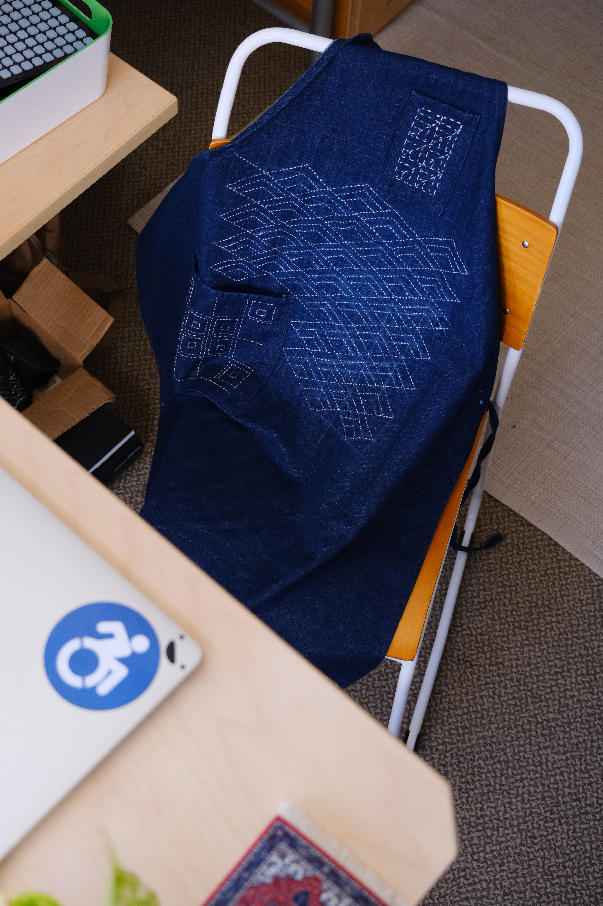
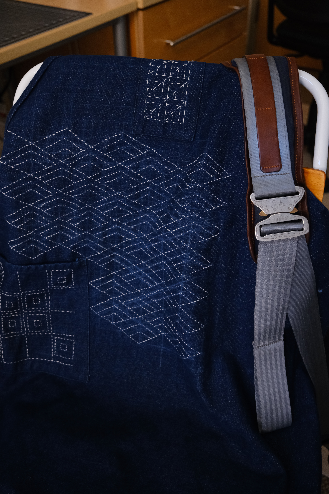
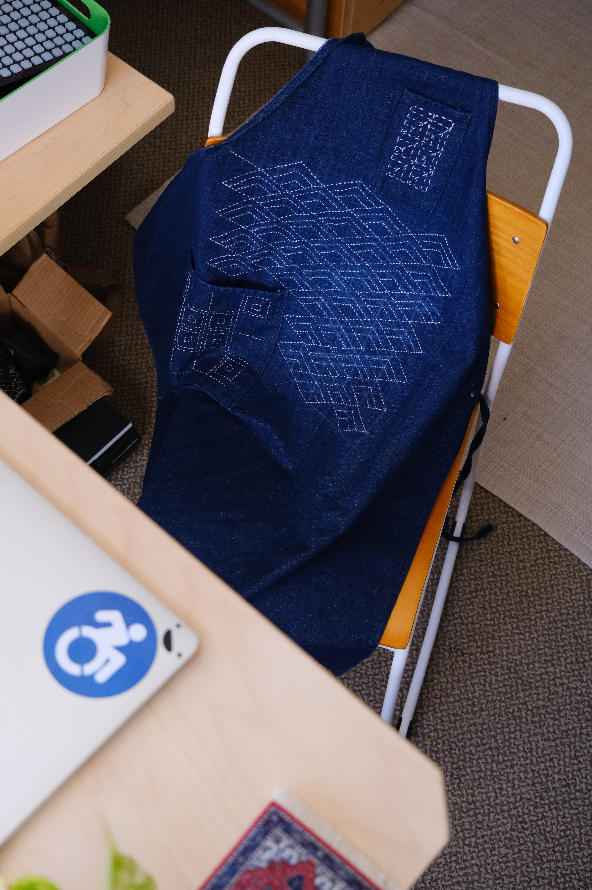
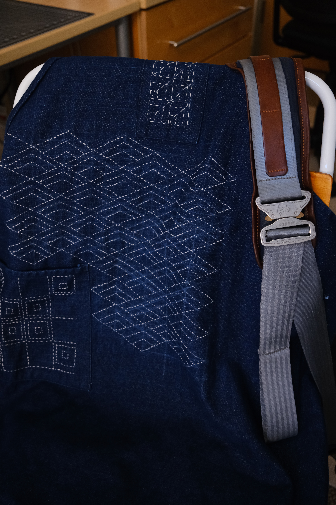
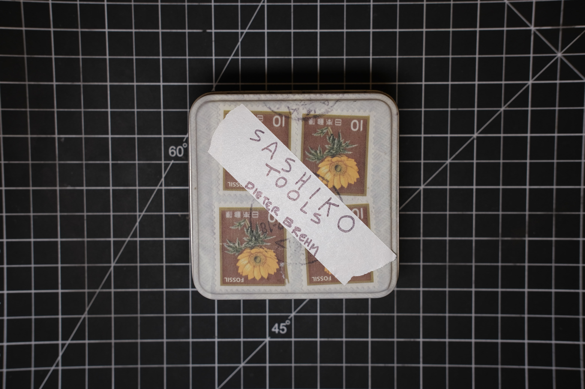
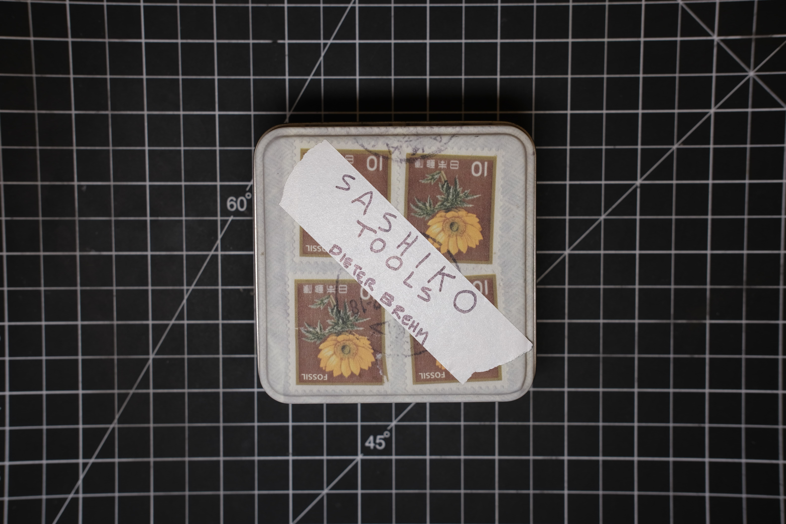

This work is a brief study into Sashiko stitching as material culture through direct practice. Textile arts and practices provide a window into the human condition and it’s relation to objects we interact with daily. Practically speaking, this is the act of recognizing Sashiko stitching and other folk art traditions as more than art, and instead as an ordinary act as essential as eating, walking, and taking care of your loved ones. Sashiko stitching, then, is a fast and effective way to reinforce garments and fabric with additional thread. It is a practice from Japan, not dissimilar to other fabric mending and enforcing, and is intertwined with aesthetic and practical requirements, including limited access to new fabric.
APRON
After a series of short tests, my first big project was to sew an apron for use in my own drawing works, as a studio apron (inking can get messy!). It is a simple denim apron with two ties around the back, and two pockets. As I grew in my ability to do the technical aspects of this stitching, I started with embroidering the pockets before moving on to the larger field of the apron. Oddly, though, the pockets with their geometry may have been a more difficult subject. Regardless, this apron will come along with me whenever I’m drawing or sewing for many years to come.
 



PANT
My next work revolved around repair more closely. I have an old pair of pants which have a hole in the knee, and I decided to stitch a small patch in order to reinforce the pants against future worries and stresses and to repair that existing hole. In doing so I practiced stitching onto pants which requires being delicate and not sewing through opposite pant sides. The patching denim is a bit lighter and more stretchy than the heavy duck canvas of the original pants, so I have some hope that it will give and adjust when needed to the original material. As I came up with the patch first, I ended up duplicating my stitching while attaching the black patch onto this pair of pants.
TOTE
The last project to complete a simple triplet of work will be an embroidered tote bag which I’m borrowing from a friend. Throughout this semester I’ve avoided buying new garments that fit the constraints of this project, as I feel that it would contradict the spirit of the material culture of Sashiko and additionally conflicts with my feelings on consumable clothing. The challenge with this last piece for this period will be working amongst existing screen printing while letting my own stitching visually interact with the bright yellow line art in the printing.
TOOLS
I use a number of implements while stitching. Some of these are quite commonplace, while others take shapes that were new to me when I started this project. For instance, my needles resemble sewing needles, but are much longer with designs for holding multiple stiches at once. My thimble, like others, is a protective piece of metal. However, instead of going on a fingertip, it is held like a ring and used to push the needle through multiple stitches across the fabric.
 
